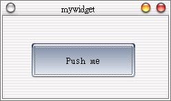

我們之前都是將整個QWidget物件或其衍生物件，利用setMainWidget()將之設為主Widget，這會使得QWidget物件填滿整個視窗，這邊我們來看看如何自訂自己的Widget，並設定當中的QWidget位置。
#include <qapplication.h> 首先我們繼承QWidget： class MyWidget : public QWidget {
public: MyWidget(QWidget *parent=0, const char *name=0); }; 而我們利用建構函式（constructor）來進行一些初始化的動作，接下來我們實作建構函式內容，setMinimumSize()與setMaximumSize()是用來設定Widget的最大與最小長寬，設定為相同時表示這個Widget無法變動大小： setMinimumSize(240, 120);
setMaximumSize(240, 120); 接下來的程式碼中： QPushButton *btn = new QPushButton("Push me", this, "btn");
btn->setGeometry(42, 40, 150, 50); 我們配置QPushButton，設定其顯示為"Push me"，新的Widget其父類別為本身（this），而我們給這個Widget一個名稱"btn"，它只是剛好與物件名稱btn相同而已，而這個名稱與 顯示文字也沒有關係；setGeometry()設定btn的右上角座標為(42, 40)，而其長寬為(150, 50)。 接下來我們連接Signal與Slot： connect(btn, SIGNAL(clicked()), qApp, SLOT(quit()));
由於目前還不知道應用程式物件是誰，我們必須先將之連接至Qt的公用指標qApp，qApp還提供了許多公用方法，這之後還會遇到。 再來設定Qt視窗的位置與大小： w.setGeometry(200, 200, 240, 120);
我們的Qt視窗左上角將會在(200, 200)的位置，長寬為(240, 120)；接下來的部份都相同了。 下圖為執行後的結果：  |